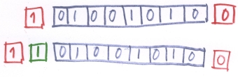

| Datorkommunikation | ||
|---|---|---|
| Föregående | Nästa | |
Skillnaden mellan seriell och parallell kommunikation hörs nästan i namnet. Vid seriell kommunikation skickas bitarna i en rad efter varandra och vid parallell kommunikation skickas flera bitar i bredd, samtidigt. Det kan naturligtvis inte finnas flera bitar på en ledning samtidigt utan de åtskiljs av tiden. Ledningen kan ju bara i ett ögonblick vara antingen 0 eller 1. Men liknelsen fungerar i alla fall.
Seriell kommunikation lämpar sig bäst då data skall transporteras längre sträckor och parallell kommunikation används bara för att transportera data kortare sträckor.
Parallell kommunikation innebär som tidigare nämnts att data-bitarna skickas parallellt i grupper. Detta innebär att några förutsättningar måste finnas. Får det första så måste det finnas en ledning för varje bit som skall åka i bredd. Tänk på en motorväg, fyra bilar lastade med ettor eller nollor kan bara åka parallellt om det finns fyra filer på vägen. Vidare så måste filerna vara likvärdiga för att en grupp bilar ska komma fram samtidigt. Om en fil är långsammare än de andra så kommer överföringen att bli långsammare och om det blir problem på en fil så kommer överföringen naturligtvis att hindras. Se figur 3-1.
När vi talar om datorkommunikation är det naturligtvis inte filer på en motorväg vi talar om utan om ledningar. Ju fler ledningar i bredd desto snabbare dataöverföring. Eftersom parallell överföring lämpar sig bäst för korta avstånd är det denna typ av kommunikation som används inuti en dator för att flytta data mellan minnet, processorn och andra enheter som till exempel diskar och minnen. Vanligtvis idag så har dessa databussar, som det kallas, 32 ledningar i bredd men 64 blir allt vanligare. Även 8 och 16 ledningar förekommer men det är inte lika vanligt.
Eftersom en ledning med 32 kablar i bredd kan överföra 32 bitar i taget brukar en sådan ledning kallas för en 32-bitars buss.
Som nämnts tidigare så används parallella anslutningar oftast inom datorn men det kan också användas för att ansluta yttre enheter. Vanligaste enheten som ansluts till en dator parallellt är en skrivare men även lagringsenheter, skannrar och annat förekommer med parallell anslutning. Den parallella anslutning som finns på de flesta PC kallas normalt för parallellport eller skrivarport. figur 3-2 visar hur en parallellport eller skrivarport ser ut.
Den största nackdelen med att ansluta utrustning till datorn via en parallellkabel är att denna kabel måste hållas kort. För skrivare som inte är så krävande kan den vara omkring 5 meter medan den om man har mer krävande utrustningar som till exempel diskar bara kan ha en kabel på omkring en meters längd.
Till skillnad från parallell kommunikation så behövs det i seriell kommunikation egentligen bara en ledare. I praktiken så behövs det oftast åtminstone två men man kan se det som en. Ofta har man en ledare för trafik i den ena riktningen och en för trafik i den andra riktningen plus några ledare för kontrollsignaler.
Seriell överföring är normalt långsammare än parallell överföring men är inte lika störningskänslig och man kan ha kablar som är upp till 40 meter långa.
På en PC kan det finnas lite olika seriella portar. En lite äldre som normalt kallas en serieport eller som den lite mer strikt heter RS-232 (Recommended Standard 232, från ett Amerikanskt standardiseringsförbund). Denna kan se ut på två olika sätt, antingen med 9 poler eller med 25. Dessa två fungerar likadant men ser olika ut. Den med 25 poler blir mindre och mindre förekommande eftersom den tar större plats.
Något som blir vanligare och vanligare både på PC och bland tillbehör är något som kallas för USB (Universal Serial Bus) som används för att koppla tillbehör till en dator. Den har mycket högre överföringskapacitet än den äldre RS-232. Även USB finns i två utföranden. Den större är vanligast att man hittar på datorer och i kopplingar medan den mindre ofta hittas på utrustningar som till exempel kameror, skannrar och diskar där utrymmet ofta är mindre. I figur 3-4 visas de vanligaste typerna av serieanslutningar och motsvarande kablar. De två uttagen till vänster är RS-232 portar. Dessa kallas vanligvis bara för serieportar. De två till höger är USB-anslutningar. Under alla portar visas motsvarande kabel.
För att seriell överföring skall fungera så måste data skickas på ett visst sätt genom kabeln. Annars fungerar det naturligtvis inte. Man skiljer på två olika sätt att överföra data seriellt, nämligen synkront och asynkront. Att skicka data asynkront är det vanligaste.
Synkron överföring innebär att databitarna skickas i så kallade datablock. Varje datablock kan innehålla hundratals bitar. Hur många framgår av de regler (protokoll) som gäller för överföringen. För att de parter som utbyter data på en synkron förbindelse skall veta var de är så måste de ha en gemensam klocka så att parterna kan hålla takten. Vidare så måste båda parterna ha tillgång till ett buffertminne för att kunna samla upp datablock och kontrollera dem. Parterna måste också kunna förbereda ett datablock för sändning.
Det vanligaste när man talar om seriell kommunikation är asynkron överföring. Med asynkron överföring skickas data tecken för tecken och inte block för block. Det ger lite större overhead eftersom varje tecken måste kontrolleras. Med overhead menas sådan trafik som inte direkt är nyttig men som krävs för överföringen. Mycket overhead ger större slöseri med bandbredd än lite overhead. Man kanske kan jämföra med ett lastfartyg. Skall man flytta säd eller kaffe över jorden måste man även transportera bränsle till fartyget och mat till besättningen. Denna last måste vara med för att skeppet skall komma fram men ingår inte i den last för vilken någon betalar. Bränslet och maten utgör då overhead.
Figur 3-5. Start- och stoppbit

Schematisk bild över ett tecken . Den första biten kallas startbit. Sedan kommer de databärande bitarna och sist kommer det en stoppbit. Startbiten och stoppbiten utgör overhead.
I figur 3-5 visas hur ett tecken som skall skickas över en asynkron seriell förbindelse kan se ut. Lägg märke till att bilden kan verka felvänd, den första biten som skickas är den som är längst till höger i bilden. Först skickas en startbil som alltid är en 0:a, sedan kommer de bitar som utgör det data som skall skickas, det är normalt 7 eller 8 stycken. Sist kommer eventuellt en paritetsbit om vi kommer att behandla längre fram och en eller eventuellt två stoppbitar. Startbiten, stoppbiten och eventuell paritetsbit utgör overhead.
Om bara en start och en stoppbit används så kommer det att innebära att två bitar ber byte är overhead. Det är ganska mycket men de fördelar som finns, bland annat billiga utrustningar och möjligheter att ha långa kablar, gör att det ändå är värt denna overhead.
Man kan använda sig av något som kallas paritet. Syftet med paritet är att lägga till en enkel felkontroll på överföringen. Det fungerar så att man läggar till en bit innan stoppbiten eller stoppbitarna. Man skiljer på udda och jämn paritet. Vid jämn paritet skall summan av alla ettor, inklusive paritetsbiten utgöra ett jämnt tal och vid udda paritet ett udda tal.
Sändaren beräknar och lägger till paritetsbiten när tecknet skickas och mottagaren beräknar och kontrollerar paritetsbiten. Om den inte stämmer överens med det förväntade har något fel inträffat i överföringen.
En enklare form av paritet kallas etta eller nolla. Då lägger man till en paritetsbit som alltid är en etta eller nolla.
I detta kapitel har vi tittat på seriell och parallell kommunikation. Vi har lärt oss vad som skiljer dem åt och vilka för- respektive nackdelar de har. Vi har lärt oss att seriell kommunikation i huvudsak kan gå till på två olika sätt och hur dessa fungerar. Vi har också lärt oss begreppet overhead och dess betydelse vid seriell kommunikation.
| Föregående | Hem | Nästa |
| Dataöverföring | Datornätverk |